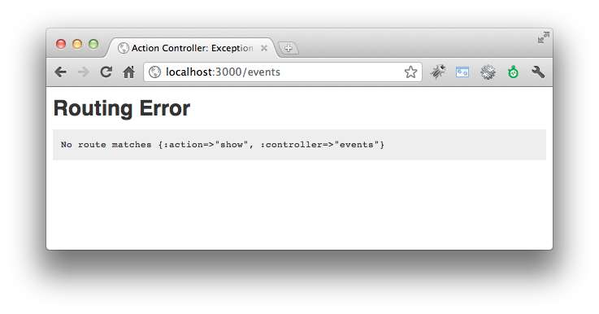

RESTful 應用程式
請注意本章內容銜接前一章，請先完成前一章內容。
什麼是 RESTful？
The first 90% of the code accounts for the first 90% of the development time. The remaining 10% of the code accounts for the other 90% of the development time. – Tom Cargill, 貝爾實驗室的物件導向程式專家
RESTful路由設計是Rails的一項獨到的發明，它使用了REST的概念來建立一整組的命名路由(named routes)。
什麼是REST呢？表象化狀態轉變Representational State Transfer，簡稱REST，是Roy Fielding博士在2000年他的博士論文中提出來的一種軟體架構風格。相較於SOAP、XML-RPC更為簡潔容易使用，也是眾多網路服務中最為普遍的API格式，像是Amazon、Yahoo!、Google等提供的API服務均有REST介面。
REST有主要有兩個核心精神：1. 使用Resource來當做識別的資源，也就是使用一個URL網址來代表一個Resource 2. 同一個Resource則可以有不同的Representations格式變化。這一章的路由實作了Resource概念，而Representation則是用了respond_to方法來實作，稍候我們也會介紹如何使用。
關於REST的理論可以參考筆者整理的什麼是REST跟RESTful？。不過，了解理論並不是在Rails中使用RESTful路由的前提條件，所以大可以跳過不甚理解沒關係。我們只要知道它可以帶來什麼技術上的具體好處，以及如何使用就足夠了。
RESTful帶給Rails最大的好處是：它幫助我們用一種比較標準化的方式來命名跟組織Controllers和Actions。在沒有RESTful之前，我們上一章介紹了典型路由設計方式，也就是一個個指定Controller和Action，雖然十分地簡便，但是卻沒有什麼準則。同一個Action讓不同的開發者設計，就很可能放在不同的Controller之下，更常見的是讓一個Controller放太多不相關的Action，造成單一Controller過於龐大。
將RESTful帶入Rails路由系統的點子，出自它對應了HTTP動詞POST、GET、PATCH/PUT、DELETE到資料的新增、讀取、更新、刪除等四項操作。一旦將HTTP動詞考慮進來，如此我們就將上一章手工打造CRUD的路由
/events/create/events/show/1/events/update/1/events/destroy/1
變成
-
POST /events對應到Controller中的create action -
GET /events/1對應到Controller中的show action -
PATCH /events/1對應到Controller中的update action -
DELETE /events/1對應到Controller中的destroy action
什麼是HTTP method？在HTTP通訊協定中制定了九種動詞(Verbs)來跟伺服器溝通，分別是HEAD、GET、POST、PUT、PATCH、DELETE、TRACE、OPTIONS、CONNECT。其中最常見的就是GET和POST：GET用來讀取資料，這個動作不應該造成任何資料變更。而POST用於送出資料，這個動作不會被快取。而因為HTML只能送出GET或透過表單送出POST，Rails為了突破這個限制，在POST加上一個隱藏參數
_method=PATCH或_method=DELETE就可以當做PATCH和DELETE請求了。
HTTP GET和其他動詞最大的差別在於它被認為是一個純讀取、不會修改任何資料的操作，不像POST、PATCH、DELETE會修改伺服器上的資料。我們一般用瀏覽器GET網頁，可以回上一頁或重新整理，但是POST網頁要重新整理時，瀏覽器會提示你是否要在執行一次，就是這個道理。
Rails用這套慣例來大大簡化了路由設定。那程式該怎麼寫呢？我們在config/routes.rb加入以下一行程式：
resources :events
如此就會自動建立四個命名路由(named routes)，搭配四個HTTP動詞，對應到七個Actions。它的實際作用，就如同以下的routes.rb設定：
get '/events' => "events#index", :as => "events"
post '/events' => "events#create", :as => "events"
get '/events/:id' => "events#show", :as => "event"
patch '/events/:id' => "events#update", :as => "event"
put '/events/:id' => "events#update", :as => "event"
delete '/events/:id' => "events#destroy", :as => "event"
get '/events/new' => "events#new", :as => "new_event"
get '/events/:id/edit' => "events#edit", :as => "edit_event"
用這張表格會更清楚：
| Helper | GET | POST | PATCH/PUT | DELETE | |
|---|---|---|---|---|---|
| event_path(@event) | /events/1 show action |
/events/1 update action |
/events/1 destroy action |
||
| events_path | /events index action |
/events create action |
|||
| edit_event_path(@event) | /events/1/edit edit action |
||||
| new_event_path | /events/new new action |
輸入bin/rake routes也會列出目前設定的路由規則有哪些：
$ bin/rake routes
Prefix Verb URI Pattern Controller#Action
events GET /events(.:format) events#index
POST /events(.:format) events#create
new_event GET /events/new(.:format) events#new
edit_event GET /events/:id/edit(.:format) events#edit
event GET /events/:id(.:format) events#show
PATCH /events/:id(.:format) events#update
PUT /events/:id(.:format) events#update
DELETE /events/:id(.:format) events#destroy
welcome GET /welcome(.:format) welcome#index
welcome_say_hello GET /welcome/say_hello(.:format) welcome#say
root GET / welcome#index
其中的Prefix指的是在View的Helper命名，搭配_path(相對路徑)或_url(絕對路徑)結尾就可以組合出Helper方法，例如welcome_say_hello_path方法會產生出/welcome/say_hello這樣的網址。
另外，注意到這七個Action方法的名字，Rails是定好的，無法修改。這一套慣例建議你背起來，你可以這樣記憶：
- show、new、edit、update、destroy是單數，對單一元素操作
- index、create是複數，對群集操作
-
event_path(@event)需要參數，根據HTTP動詞決定show、update、destroy -
events_path毋需參數，根據HTTP動詞決定index、create
因此，最後我們不寫：
link_to event.name, :controller => 'events', :action => :show , :id => event.id
而改寫成：
link_to event.name, event_path(event)
只需記得resources名稱，就可以推導出一整組的URL Helper方法。Rails就是利用這樣的高階概念，來簡化路由的設計。
瀏覽器支援PATCH/PUT跟DELETE嗎？Rails其實偷藏了
_method參數。HTML規格只定義了GET/POST，所以HTML表單是沒有PUT/DELETE的。但是XmlHttpRequest規格(也就是Ajax用的)有定義GET/POST/PUT/PATCH/DELETE/HEAD/OPTIONS。
修改成一個RESTful版本的CRUD
根據上一節所學到RESTful技巧，接續上一章的CRUD應用程式，來改造成RESTful應用程式，相信各位讀者可以從中發現到RESTful所帶來的簡潔好處。讓我們開始動手修改吧：
Step. 1
編輯config/routes.rb，加入一個Resources：
resources :events
請加在上方，routes.rb裡面越上面的規則優先權較高。
Step. 2
編輯app/views/events/index.html.erb，修改各個link_to的路徑：
<% @events.each do |event| %>
<li>
<%= event.name %>
<%= link_to "Show", event_path(event) %>
<%= link_to 'Edit', edit_event_path(event) %>
<%= button_to 'Delete', event_path(event), :method => :delete %>
</li>
<% end %>
</ul>
<%= link_to 'New Event', new_event_path %>
注意到刪除的地方，我們多一個參數:method => :delete。非GET的操作，顧及網頁親和力我們順道把link_to改成用button_to。link_to如果瀏覽器的JavaScript沒開，就會無法送出GET之外的操作。button_to就無此困擾，因為Rails是產生form標籤夾帶_method參數。
Step. 3
編輯app/views/events/show.html.erb，修改link_to的路徑：
<%= @event.name %>
<%= simple_format(@event.description) %>
<p><%= link_to 'Back to index', events_path %></p>
Step. 4
修改app/views/events/new.html.erb的表單送出位置如下：
<%= form_for @event, :url => events_path do |f| %>
在本例中，你也可以完全省略
:url參數，Rails可以根據@event推算出路由。
Step. 5
修改app/views/events/edit.html.erb的表單送出位置如下：
<%= form_for @event, :url => event_path(@event), :method => :patch do |f| %>
:url和:method也可以省略，Rails自動會根據@event是新建的還是修改來決定要不要使用PATCH。
Step. 6
修改app/controllers/events_controller.rb，將create Action和destroy Action裡的redirect_to改成
redirect_to events_url
而update Action中的redirect_to改成
redirect_to event_url(@event)
Step.7
一旦完成RESTful之後，我們在上一章一開始設定的典型路由就用不到了，編輯config/routes.rb將以下程式註砍掉：
match ':controller(/:action(/:id(.:format)))', :via => :all
典型路由雖然設定上很方便，但已經不被推薦使用，它讓所有Actions都可以透過GET訪問到，而有安全上的顧慮。我們希望限制接收表單的create Action只允許POST請求。
常見錯誤
Unknown action
明明有在config/routes.rb裡面定義了resources路由，但是出現以下的Unknown action錯誤：

排除打錯字之外，其原因多半是跟routes.rb裡面的定義順序有關。注意到在routes.rb裡面，越上面的路由規則越優先，例如如果你定義成：
Rails::Application.routes.draw do
match ':controller(/:action(/:id(.:format)))', :via => :all
resources :events
end
那麼網址/events/4就會優先比對到:controller/:action而去找4這個Action，這就錯了。
Routing Error
這錯誤通常發生在link_to裡，它抱怨找不到適合的路由規則來產生網址：

如果你是用典型路由，那麼如以下程式亂給一個不存在的Controller，就會產生一樣的錯誤了：
link_to "foobar", :controller => "No such controller", :action => "blah"
因為{ :controller => "No such controller", :action => "blah" }比對不出有這個路由規則。但是如果是用RESTful路由呢？那多半是因為參數傳錯了，例如：
link_to "Show", event_path(@foobar)
這個@foobar沒有定義所以是nil，event_path(@foobar)對Rails內部來說等同於{ :controller => "events", :action => "show", :id => nil }，這就造成了找不到路由的錯誤，它必須知道:id才能知道是那一個活動的show Action網址。
使用respond_to
respond_to可以讓我們在同一個Action中，支援不同的資料格式，例如XML、JSON、Atom等。讓我們來實作看看。
Atom是一種基於XML的供稿格式，被設計為RSS的替代品，廣泛應用於Blog feed。
Step. 1
修改app/controllers/events_controller.rb的index Action加上XML、JSON和Atom的支援，其中to_xml和to_json是ActiveRecord內建的方法：
def index
@events = Event.page(params[:page]).per(5)
respond_to do |format|
format.html # index.html.erb
format.xml { render :xml => @events.to_xml }
format.json { render :json => @events.to_json }
format.atom { @feed_title = "My event list" } # index.atom.builder
end
end
新增app/views/events/index.atom.builder檔案，內容如下：
atom_feed do |feed|
feed.title( @feed_title )
feed.updated( @events.last.created_at )
@events.each do |event|
feed.entry(event) do |entry|
entry.title( event.name )
entry.content( event.description, :type => 'html' )
end
end
end
打開瀏覽器分別瀏覽看看http://localhost:3000/events.xml、http://localhost:3000/events.json、http://localhost:3000/events.atom這幾個附檔名不同的網址。
Step. 2
修改app/controllers/events_controller.rb的show Action加上XML和JSON的支援，這回我們試試看比較手工的方式，用Builder格式來建構XML，以及手動組Hash再轉成JSON字串：
def show
@event = Event.find(params[:id])
respond_to do |format|
format.html { @page_title = @event.name } # show.html.erb
format.xml # show.xml.builder
format.json { render :json => { id: @event.id, name: @event.name }.to_json }
end
end
編輯app/views/events/show.xml.builder：
xml.event do |e|
e.name @event.name
e.description @event.description
end
打開瀏覽器分別瀏覽看看http://localhost:3000/events/1.xml、http://localhost:3000/events/1.json等網址。
Step. 3
如果想要加上這些格式的超連結，可以在URL Helper中傳入:format參數。讓我們修改app/views/events/index.html.erb加上不同格式的超連結：
<% @events.each do |event| %>
<li>
<%= link_to event.name, event_path(event) %>
<%= link_to " (XML)", event_path(event, :format => :xml) %>
<%= link_to " (JSON)", event_path(event, :format => :json) %>
<%= link_to 'edit', edit_event_path(event) %>
<%= button_to 'delete', event_path(event), :method => :delete %>
</li>
<% end %>
</ul>
<%= link_to 'new event', new_event_path %>
<%= link_to "Atom feed", events_path(:format => :atom) %>
行數統計
到目前為止，總共寫了多少程式了呢？Rails提供了一個簡單的指令可以知道：
$ bin/rake stats
就會輸出這樣的表格：
+----------------------+-------+-------+---------+---------+-----+-------+
| Name | Lines | LOC | Classes | Methods | M/C | LOC/M |
+----------------------+-------+-------+---------+---------+-----+-------+
| Controllers | 86 | 61 | 2 | 7 | 3 | 6 |
| Helpers | 4 | 4 | 0 | 0 | 0 | 0 |
| Models | 2 | 2 | 1 | 0 | 0 | 0 |
| Libraries | 0 | 0 | 0 | 0 | 0 | 0 |
| Integration tests | 0 | 0 | 0 | 0 | 0 | 0 |
| Functional tests | 49 | 39 | 1 | 0 | 0 | 0 |
| Unit tests | 11 | 6 | 2 | 0 | 0 | 0 |
+----------------------+-------+-------+---------+---------+-----+-------+
| Total | 152 | 112 | 6 | 7 | 1 | 14 |
+----------------------+-------+-------+---------+---------+-----+-------+
Code LOC: 67 Test LOC: 45 Code to Test Ratio: 1:0.7
其中LOC是指不包含空行的行數。
如何除錯？
如果是Model中的程式，你可以在命令列下輸入rails console，然後在Console中呼叫看看Model的方法看看正確與否。而除錯Controller和Views一個簡單的方法是你可以使用debug這個Helper方法，例如在app/views/events/show.html.erb中插入：
<%= debug(@event) %>
這樣就會輸出@event這個值的詳細內容。不過，更為常見的是使用Logger來記錄資訊到log/development.log裡。
關於Logger
在Rails環境中，你可以直接使用logger或是Rails.logger來拿到這個Logger物件，它有幾個方法可以呼叫：
- logger.debug 除錯用的訊息，Production環境會忽略
- logger.info 值得記錄的一般訊息
- logger.warn 值得記錄的警告訊息
- logger.error 錯誤訊息，但還不到網站無法執行的地步
- logger.fatal 嚴重錯誤到網站無法執行的訊息
例如，你想要觀察程式中變數@event的值，你可以插入以下程式到要觀察的程式段落之中：
Rails.logger.debug("event: #{@event.inspect}")
接著開瀏覽器跑實際跑過這段程式，那麼就會在rails server的標準輸出中，看到這個除錯訊息。或是你也可以另開一個指令視窗執行tail -f log/development.log來觀察log檔案。
在Production環境中，log/production.log會逐漸長大，可以使用 logrotate 定期整理 Rails Log 檔案。
我們會在測試一章進一步介紹如何撰寫測試程式，撰寫單元測試可以大大降低除錯時間。